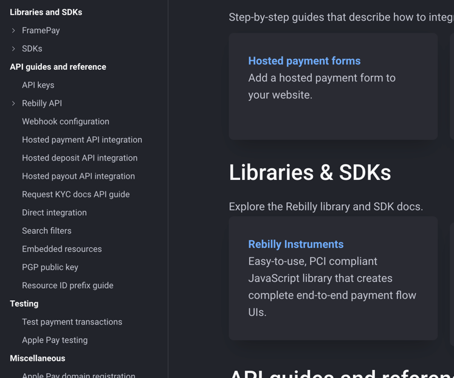
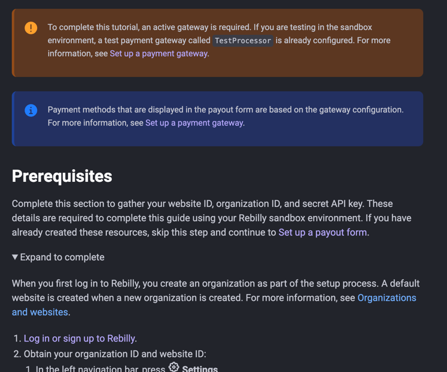
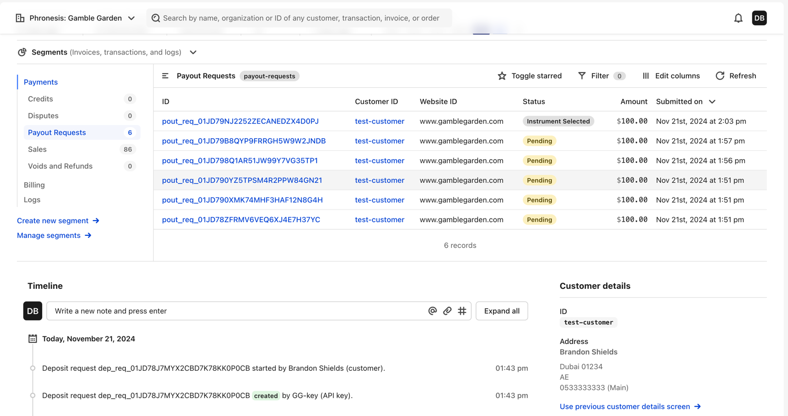
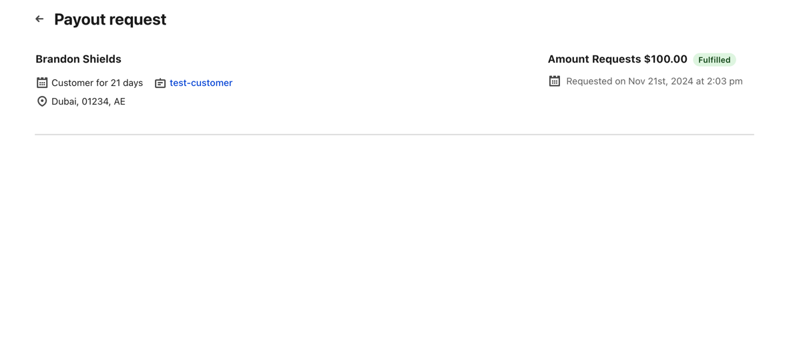
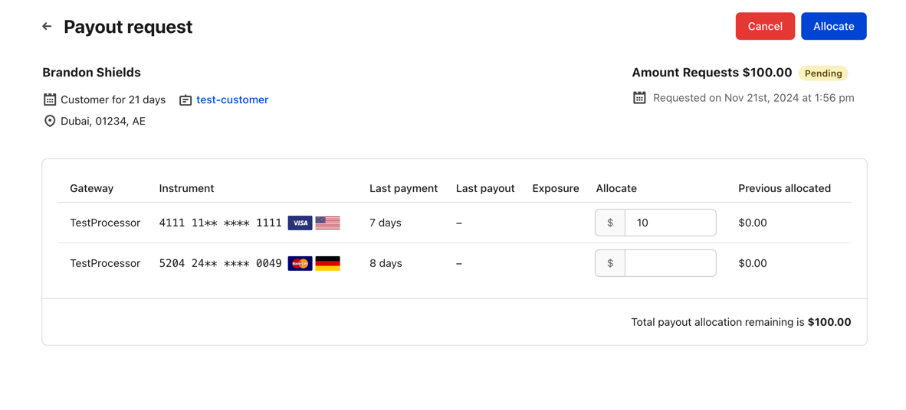
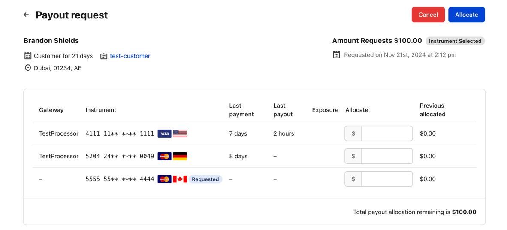
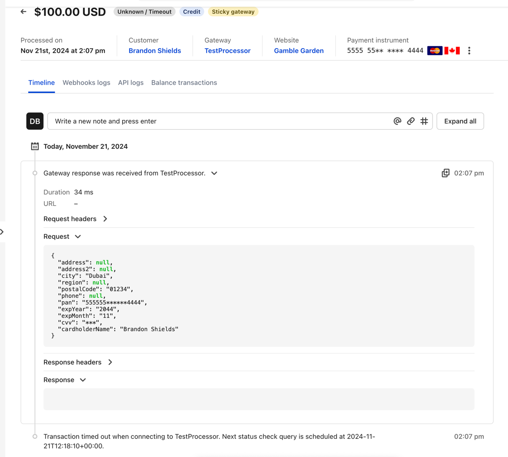
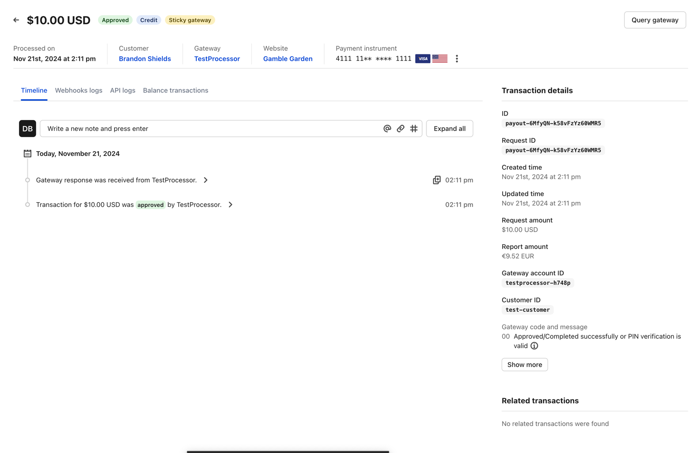
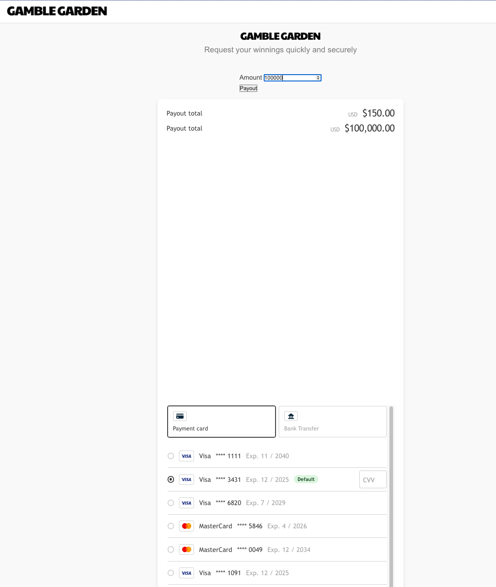
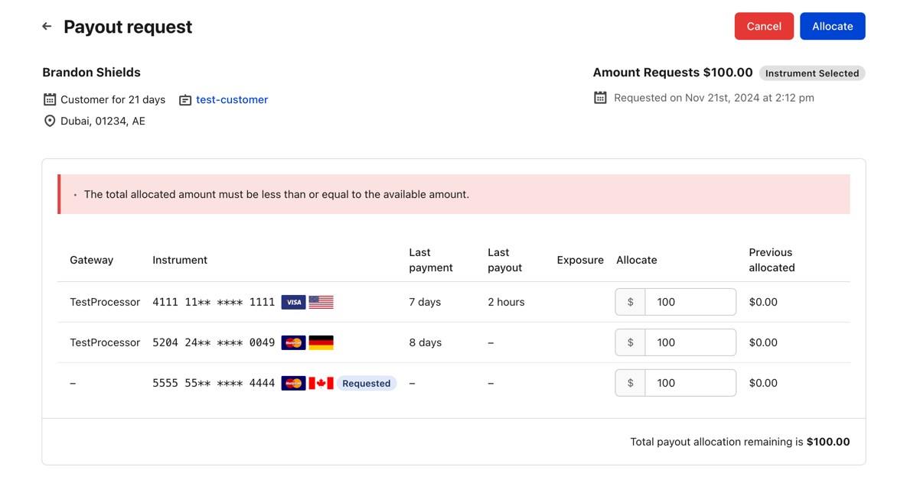

⬅ Back to debriefs
Project 16: Casino payout form
What made you smile?
What did you find confusing?
- Search is still giving us problems
- Instruments library is not linked on the side navigation, but it is on home page

- Clicking "Rebilly Instruments" on the developer docs landing page redirects to "Integrate self
hosted payment forms" - it is confusing.
- Code walkthrough component should be wider, we found horizontally scrolling a lot
- No clear explanation that payout request needs to be generated on the server side and why.. (Example
says use HTML and CDN)
- Prerequisites are not correct.
- No mention of gateway having to be configured to allow payouts.

- Payout requests not showing up on the customer timeline

- "Amount requests" wrong copy
- Payout request page UI is inconsistent and lacking data

-
Remaining payout allocation is not calculated as you allocate amounts (before saving)

- There was no gateway for request payout method, it is not prefilling the value, and the "requested"
badge does not like, and noticeable.

- Payout request was fulfilled, but turns out transaction actually failed and test processor timed

-
Cannot navigate to payout request page, from the transaction page.

-
Weird behaviour after reinitializing instruments

-
Customer has to calculate the remaining amount to allocate
